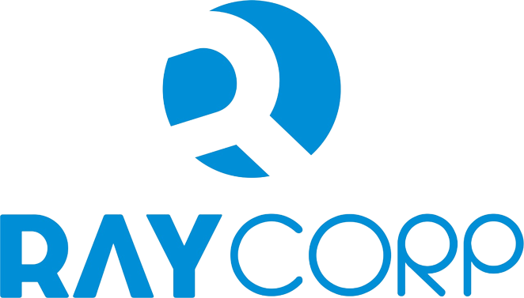

<nav class="navbar navbar-expand-lg fixed-top ">
  <div class="container max-w-full ">
    <div class="navbar-wrapper">
      <a class="navbar-brand cursor-pointer">
      </a>

      <div class="navbar-minimize" *ngIf="isScreenSmall">
        <button mat-raised-button (click)="minimizeSidebar()" class="btn btn-just-icon btn-white btn-fab btn-round">
          <i class="material-icons text_align-center visible-on-sidebar-regular">more_vert</i>
          <i class="material-icons design_bullet-list-67 visible-on-sidebar-mini">view_list</i>
        </button>
      </div>
    </div>
    <button mat-button class="navbar-toggler btn-no-ripple" type="button" (click)="sidebarToggle()"
      *ngIf="isScreenSmall && loggedIn">
      <span class="sr-only">Toggle navigation</span>
      <span class="navbar-toggler-icon icon-bar"></span>
      <span class="navbar-toggler-icon icon-bar"></span>
      <span class="navbar-toggler-icon icon-bar"></span>
    </button>
  </div>
</nav>